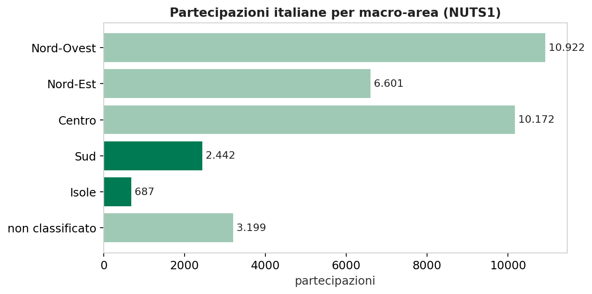
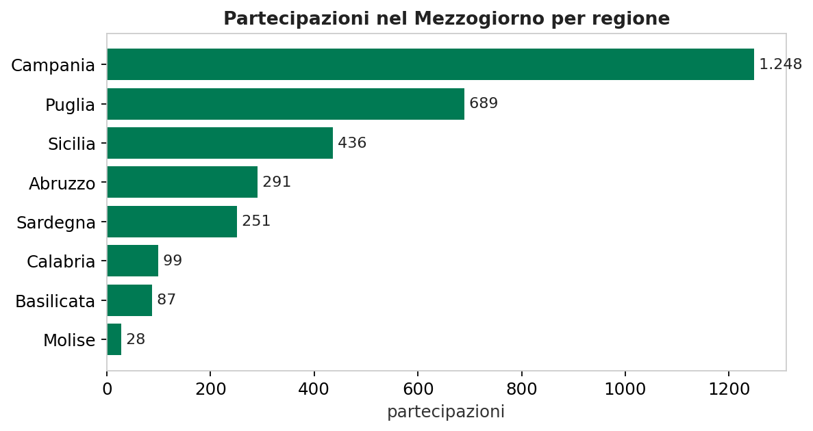
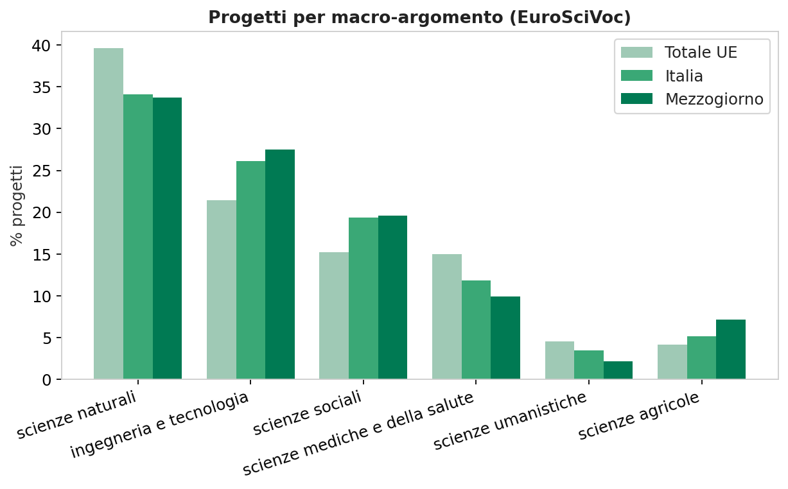
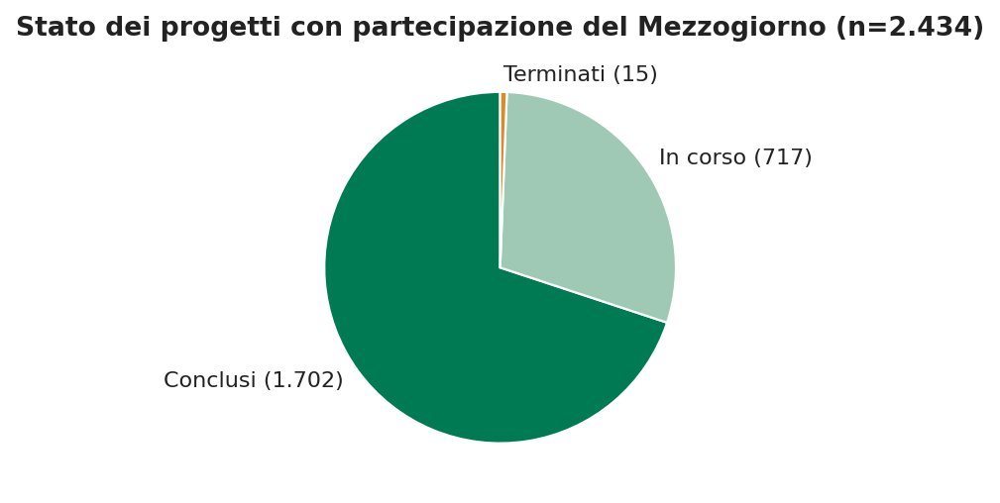
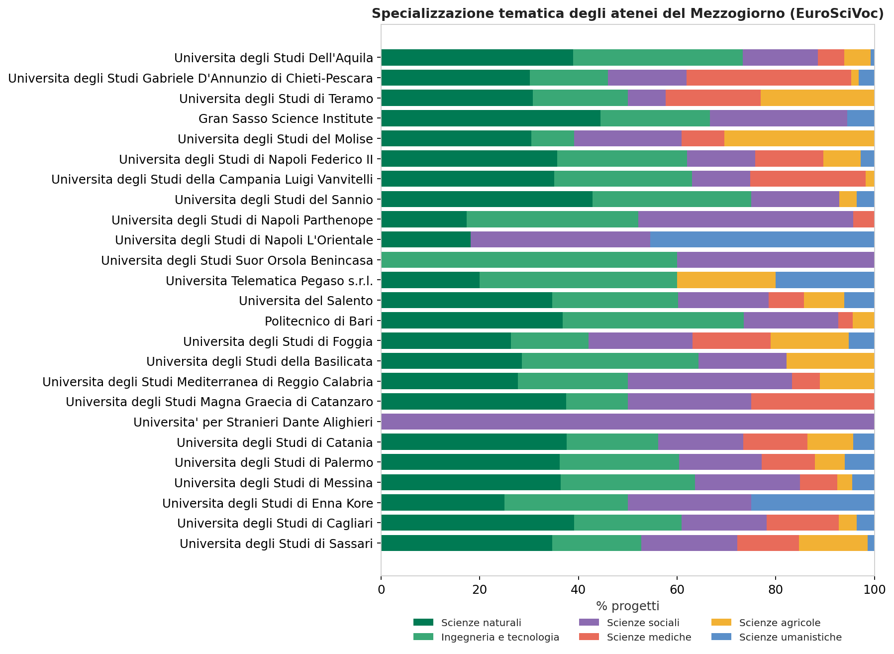

I progetti di ricerca finanziati dall’Unione europea
Un quadro descrittivo del database CORDIS, con un approfondimento su Italia e Mezzogiorno
Paolo Volterra ![]()
Italiano. Il database CORDIS raccoglie i progetti di ricerca e innovazione finanziati dall’Unione europea. Il documento offre un quadro descrittivo del contenuto — oltre 80.000 progetti distribuiti sui tre programmi quadro principali (FP7, Horizon 2020 e Horizon Europe) e circa 160,7 miliardi di euro di contributo comunitario complessivo — e un approfondimento sul sistema italiano, con particolare attenzione al Mezzogiorno: la distribuzione territoriale delle partecipazioni, gli atenei e le imprese coinvolti, i macro-argomenti di ricerca e lo stato di avanzamento dei progetti.
English. The CORDIS database collects the research and innovation projects funded by the European Union. This document provides a descriptive overview of its content — over 80,000 projects spread across the three main framework programmes (FP7, Horizon 2020 and Horizon Europe) and about €160.7 billion in total EU contribution — together with a focus on the Italian system, with particular attention to the Mezzogiorno: the territorial distribution of participations, the universities and firms involved, the main research topics, and the progress status of projects.
CORDIS, Unione europea, Horizon 2020, Horizon Europe, FP7, ricerca, finanziamenti, partecipazioni, Mezzogiorno, università, imprese
Versione citabile su Zenodo, con il PDF: doi.org/10.5281/zenodo.22860913.
1 Introduzione
CORDIS (Community Research and Development Information Service) è il registro ufficiale dei progetti di ricerca e innovazione finanziati dai programmi quadro dell’Unione europea, gestito dall’Ufficio delle pubblicazioni. I dati sono pubblicati in forma aperta, sia come dataset scaricabili sia attraverso un knowledge graph interrogabile, il grafo EURIO [1], [2]. Questo documento descrive il contenuto del registro a partire dal rilascio del 29 luglio 2026 [3], concentrandosi dapprima su tre dimensioni generali (la copertura temporale e per framework programme, l’entità dei finanziamenti, la geografia delle partecipazioni) e poi sul sistema italiano, con un approfondimento dedicato al Mezzogiorno.
Il registro contiene 80.249 progetti e altrettanti record di finanziamento, ai quali si affiancano circa 72.000 organizzazioni e quasi 400.000 relazioni di partecipazione tra un organismo e un progetto. La copertura temporale va dal 2001 al 2027 e attraversa quattro framework programme: il sesto (residuale, con sei record nel rilascio corrente), il settimo (FP7, 2007–2013), Horizon 2020 (2014–2020) e Horizon Europe (2021–2027). Si tratta però dell’ultima parte di una storia più lunga, iniziata nel 1984 con il primo Programma Quadro (FP1): i programmi precedenti a FP6 (FP1–FP5) sono pubblicati come dataset separati [4] e non rientrano in questo rilascio, ma vanno tenuti presenti per collocare correttamente nel tempo l’intera vicenda dei finanziamenti europei alla ricerca.
2 La dimensione temporale e i framework programme
La distribuzione dei progetti per framework riflette la progressione dei programmi quadro (Tabella 1). Horizon 2020 è il programma con il maggior numero di progetti (33.407), seguito da Horizon Europe (23.493) e da FP7 (22.380). Il dato di Horizon Europe è ancora parziale: essendo il programma in corso, il rilascio di luglio 2026 cattura i progetti avviati finora, mentre quelli degli anni conclusivi verranno inseriti man mano che i bandi si esauriscono.
| Framework | Progetti | Costo totale (mld €) | Contributo UE (mld €) |
|---|---|---|---|
| Horizon 2020 | 33.407 | 79,25 | 63,26 |
| Horizon Europe | 23.493 | 63,44 | 56,41 |
| FP7 | 22.380 | 57,81 | 40,98 |
| FP6 | 6 | 0,01 | — |
| (non classificato) | 963 | 7,03 | 0,02 |
Tabella 1: Progetti per framework programme, con costo totale e contributo comunitario.
La vicenda dei programmi quadro è però più lunga: il primo risale al 1984 e le dotazioni sono cresciute di quasi trenta volte, dai 3,3 miliardi di euro di FP1 ai 95,5 miliardi di Horizon Europe (il nono programma quadro). Nel luglio 2025 la Commissione ha proposto per il 2028–2034 un decimo programma quadro ancora denominato Horizon Europe; la procedura legislativa è in corso [7], [14], [16] (Tabella 2). Solo dall’ottavo programma in poi il programma quadro ha assunto una denominazione commerciale («brand»): Horizon 2020 e Horizon Europe. Il registro qui analizzato copre solo l’ultima parte di questa storia — da FP6 in poi, con FP6 presente in modo residuale — mentre i programmi precedenti (FP1–FP5) sono pubblicati come dataset separati su data.europa.eu [4].2 La digitalizzazione del monitoraggio è relativamente recente: è con FP7 e, soprattutto, con Horizon 2020 che la tracciabilità di progetti, finanziamenti e partecipanti è diventata sistematica e interrogabile in forma aperta, fino all’attuale knowledge graph EURIO.
| FP | Brand | Periodo | Dotazione |
|---|---|---|---|
| FP1 | — | 1984–1987 | 3,3 |
| FP2 | — | 1987–1991 | 5,4 |
| FP3 | — | 1990–1994 | 6,6 |
| FP4 | — | 1994–1998 | 13,2 |
| FP5 | — | 1998–2002 | 14,9 |
| FP6 | — | 2002–2006 | 19,3 |
| FP7 | — | 2007–2013 | 50,5 |
| FP8 | Horizon 2020 | 2014–2020 | 74,8 |
| FP9 | Horizon Europe | 2021–2027 | 95,5 |
| FP10 (proposta) | Horizon Europe | 2028–2034 | ~175 |
Tabella 2: I dieci programmi quadro dell’Unione europea, con denominazione commerciale («brand») quando presente; dotazioni indicative in miliardi di euro. FP1–FP8 seguono la serie comparabile EPRS, i cui perimetri possono differire dagli atti istitutivi; per FP10 il valore è una proposta.
L’andamento annuale mostra il tipico profilo a campana di ciascun programma: FP7 cresce da poco meno di 200 progetti avviati nel 2007 fino a oltre 4.500 nel 2013, Horizon 2020 oscilla intorno a 5.000 avvii l’anno tra il 2015 e il 2019, e Horizon Europe supera i 5.000 avvii nel 2023 prima del fisiologico declino legato alla conclusione dei bandi.
Sul piano della durata, la maggioranza dei progetti si colloca tra i 24 e i 60 mesi: la durata di 24 mesi è la più frequente (21.517 progetti), seguita da 60 mesi (10.582) e 36 mesi (9.882).
3 I finanziamenti
Il contributo comunitario complessivo ammonta a circa 160,7 miliardi di euro, a fronte di un costo totale riconosciuto dei progetti di circa 207,5 miliardi. Horizon 2020 e Horizon Europe hanno un peso relativamente vicino, con contributi rispettivamente di 63,3 e 56,4 miliardi; FP7 è più contenuto, con 41,0 miliardi.
La distribuzione è fortemente asimmetrica, con un numero ristretto di progetti di grandissime dimensioni che convive con una massa di progetti piccoli e medi. Il costo mediano di un progetto è di circa 1,1 milioni di euro, il contributo mediano è dello stesso ordine, mentre i progetti più grandi — le partnership pubblico-private e i programmi congiunti — superano i 100 milioni: il programma EUROfusion per la ricerca sulla fusione, il più finanziato in assoluto, supera i 600 milioni di contributo comunitario nella sola fase Horizon 2020.
4 La geografia delle partecipazioni
La partecipazione ai progetti è distribuita su un numero molto ampio di paesi, ma è fortemente concentrata nei grandi sistemi di ricerca dei paesi fondatori (Tabella 3). La Germania guida con 47.621 partecipazioni, seguita da Spagna (38.276), Regno Unito (35.848), Francia (34.757) e Italia (34.023). I primi cinque paesi assommano circa metà di tutte le partecipazioni.
| Paese | Partecipazioni | Progetti distinti | Coordinamenti |
|---|---|---|---|
| Germania | 47.621 | 24.069 | 8.892 |
| Spagna | 38.276 | 19.507 | 8.410 |
| Regno Unito | 35.848 | 22.408 | 10.110 |
| Francia | 34.757 | 18.584 | 6.955 |
| Italia | 34.023 | 17.447 | 6.027 |
| Paesi Bassi | 23.855 | 14.281 | 5.107 |
| Belgio | 18.294 | 11.700 | 3.058 |
| Grecia | 12.033 | 6.928 | 1.719 |
| Svezia | 11.683 | 8.038 | 2.222 |
| Svizzera | 11.386 | 8.706 | 2.544 |
Tabella 3: Partecipazioni, progetti distinti e coordinamenti per paese (prime dieci posizioni).
Il ruolo di coordinatore rivela una gerarchia in parte diversa da quella delle semplici partecipazioni. Il Regno Unito, pur essendo terzo per numero assoluto di partecipazioni, è il paese con il maggior numero di coordinamenti (10.110), segno di una forte capacità di leadership nei consorzi. L’Italia, quinta per partecipazioni, coordina 6.027 progetti, un valore inferiore a quello di Germania e Spagna e più vicino a quello francese.
5 Le organizzazioni più attive
La capacità di attrarre finanziamenti è molto concentrata anche sul piano istituzionale. Le grandi organizzazioni di ricerca nazionali dominano la classifica: il Centre national de la recherche scientifique (CNRS) francese registra oltre 4.300 partecipazioni, la Fraunhofer-Gesellschaft tedesca circa 2.650 e il Consejo Superior de Investigaciones Científicas spagnolo circa 2.000; seguono Cambridge, la Max-Planck-Gesellschaft, KU Leuven e Oxford (Tabella 4).
| Organizzazione | Paese | Partecipazioni |
|---|---|---|
| Centre National de la Recherche Scientifique Cnrs | Francia | 4.311 |
| Fraunhofer Gesellschaft Zur Forderung Der Angewandten Forschung Ev | Germania | 2.652 |
| Agencia Estatal Consejo Superior de Investigaciones Cientificas | Spagna | 2.026 |
| The Chancellor Masters And Scholars Of The University Of Cambridge | Regno Unito | 1.727 |
| Max-Planck-Gesellschaft Zur Forderung Der Wissenschaften Ev | Germania | 1.645 |
| Katholieke Universiteit Leuven | Belgio | 1.598 |
| The Chancellor, Masters And Scholars Of The University Of Oxford | Regno Unito | 1.585 |
| Imperial College Of Science Technology And Medicine | Regno Unito | 1.441 |
| Eidgenoessische Technische Hochschule Zuerich | Svizzera | 1.401 |
| Kobenhavns Universitet | Danimarca | 1.352 |
Tabella 4: Prime dieci organizzazioni per numero di partecipazioni.
Per l’Italia la prima organizzazione è il Politecnico di Milano, con 919 partecipazioni, seguito dall’Università di Bologna (791), dall’Università di Padova (673) e dal Politecnico di Torino (569).
Sul piano tematico, il grafo associa ai progetti parole chiave molto eterogenee. Il loro uso nel tempo e fra programmi richiede però una normalizzazione specifica; per questo il confronto tematico del rapporto si basa sul vocabolario controllato EuroSciVoc, non su frequenze lessicali grezze.
Il registro descrive però l’input della ricerca — i progetti e i finanziamenti — non il suo output: per una misura degli esiti, come i brevetti delle università e degli enti di ricerca (tracciabili sulla piattaforma PATIRIS [17]) o il ruolo del capitale di rischio nell’innovazione [18], occorre affiancare altre fonti.
6 L’Italia e il Mezzogiorno
6.1 La distribuzione territoriale
Le 6.452 organizzazioni italiane presenti nel registro assommano 34.023 partecipazioni, distribuite però in modo diseguale sul territorio (Figura 1, Tabella 5). Le macro-aree del Nord-Ovest (10.922) e del Centro (10.172) guidano la classifica, seguite dal Nord-Est (6.601). Il Mezzogiorno — qui definito come l’unione delle macro-aree NUTS1 Sud e Isole, che comprendono complessivamente otto regioni NUTS2 [19] — totalizza 3.129 partecipazioni, pari al 9,2 per cento del totale nazionale: 2.442 nelle regioni del Sud e 687 nelle Isole.

Figura 1: Partecipazioni italiane per macro-area (NUTS1)
| Macro-area | Partecipazioni | Progetti | Coordinamenti |
|---|---|---|---|
| Nord-Ovest | 10.922 | 7.477 | 2.036 |
| Nord-Est | 6.601 | 4.994 | 1.614 |
| Centro | 10.172 | 7.075 | 1.600 |
| Sud | 2.442 | 1.923 | 311 |
| Isole | 687 | 585 | 66 |
| non classificato | 3.199 | 2.757 | 400 |
Tabella 5: Partecipazioni, progetti e coordinamenti italiani per macro-area. Un progetto può coinvolgere più macro-aree: la colonna «Progetti» non è quindi sommabile tra le righe.
All’interno del Mezzogiorno la distribuzione per regione è a sua volta concentrata (Figura 2, Tabella 6): la Campania, con 1.248 partecipazioni, vale da sola il 40 per cento del totale meridionale, seguita da Puglia (689), Sicilia (436) e Abruzzo (291). Chiudono la classifica Sardegna (251), Calabria (99), Basilicata (87) e Molise (28).

Figura 2: Partecipazioni nel Mezzogiorno per regione
| Regione | Partecipazioni | Progetti | Coordinamenti |
|---|---|---|---|
| Campania | 1.248 | 1.002 | 152 |
| Puglia | 689 | 609 | 74 |
| Sicilia | 436 | 378 | 45 |
| Abruzzo | 291 | 254 | 48 |
| Sardegna | 251 | 220 | 21 |
| Calabria | 99 | 85 | 17 |
| Basilicata | 87 | 76 | 19 |
| Molise | 28 | 27 | 1 |
Tabella 6: Partecipazioni, progetti e coordinamenti per regione del Mezzogiorno.
Due asimmetrie meritano attenzione:
la leadership: il Mezzogiorno coordina 377 progetti, il 6,3 per cento dei 6.027 coordinamenti italiani, una quota inferiore alla sua quota di partecipazioni (9,2 per cento), segno di un divario nella capacità di guida dei consorzi.
il valore delle reti e i pagamenti ricevuti: i progetti cui partecipa almeno un organismo del Mezzogiorno hanno un contributo comunitario complessivo di 14,63 miliardi di euro, pari al 20,8 per cento dei 70,17 miliardi dei progetti con presenza italiana. È il valore totale dei consorzi, utile a misurare l’ampiezza delle reti raggiunte, non la quota attribuibile al territorio. I pagamenti UE registrati per le organizzazioni meridionali ammontano invece a 880,5 milioni, l’8,1 per cento dei 10.931,0 milioni attribuiti alle organizzazioni italiane (Tabella 7).
| Area | Organizzazioni | Progetti | Pagamenti UE (mln €) | Quota Italia (%) |
|---|---|---|---|---|
| Mezzogiorno | 724 | 2.408 | 880,5 | 8,1 |
| Italia | 6.411 | 17.271 | 10.931,0 | 100,0 |
Tabella 7: Pagamenti UE attribuiti alle organizzazioni: Mezzogiorno e totale Italia. Le colonne «Organizzazioni» e «Progetti» contano soltanto i soggetti e i progetti con almeno un pagamento registrato, non l’intero perimetro delle partecipazioni.
6.2 Le università del Mezzogiorno
Gli atenei del Mezzogiorno presenti in CORDIS sono 25 e sono guidati dall’Università degli Studi di Napoli Federico II, la prima del Sud per partecipazioni (268) e progetti (267), con pagamenti UE per 91,4 milioni di euro; i consorzi dei 267 progetti cui partecipa hanno un costo complessivo di 2,7 miliardi (Tabella 8). Le due grandezze hanno perimetri diversi e non misurano un tasso di copertura: la prima è attribuita all’ateneo, la seconda riguarda tutti i partner. Seguono le università di Catania (109 progetti, 23,6 milioni) e Palermo (93 progetti, 26,1 milioni). Il Politecnico di Bari è il principale ateneo tecnico della macro-area, con 43 progetti e 10,9 milioni di contributo comunitario.
Le colonne Conclusi e In corso riportano lo stato amministrativo dei progetti dell’ateneo derivato da projectStatus (rispettivamente CLOSED e SIGNED); la colonna % conclusi esprime i progetti CLOSED sul totale dei progetti dell’ateneo, includendo dunque nel denominatore anche gli eventuali stati diversi da SIGNED. È un indicatore sintetico, non una percentuale fisica di avanzamento. Il contributo comunitario è la quota di finanziamento UE effettivamente versata all’ateneo, ricostruita dai pagamenti registrati per singolo partecipante nel grafo EURIO.3 Il costo totale resta invece quello dell’intero progetto, non della sola quota dell’ateneo, perché CORDIS non pubblica la ripartizione dei costi di progetto (a differenza del contributo) fra i partecipanti.
| Ateneo | Città | Regione | Partecip. | Progetti | Pagamenti UE (mln €) | Costo consorzi (mln €) | Conclusi | In corso | % conclusi |
|---|---|---|---|---|---|---|---|---|---|
| Universita degli Studi di Napoli Federico II | Napoli | Campania | 268 | 267 | 91,4 | 2.713,0 | 208 | 54 | 77,9 |
| Universita degli Studi di Catania | Catania | Sicilia | 109 | 109 | 23,6 | 3.398,3 | 64 | 45 | 58,7 |
| Universita degli Studi di Palermo | Palermo | Sicilia | 93 | 93 | 26,1 | 2.943,7 | 69 | 23 | 74,2 |
| Universita degli Studi della Campania Luigi Vanvitelli | Caserta | Campania | 81 | 81 | 18,2 | 709,5 | 55 | 24 | 67,9 |
| Universita degli Studi Dell’Aquila | L Aquila | Abruzzo | 78 | 78 | 17,8 | 718,0 | 55 | 23 | 70,5 |
| Universita degli Studi di Cagliari | Cagliari | Sardegna | 73 | 73 | 20,8 | 1.885,4 | 61 | 12 | 83,6 |
| Universita del Salento | Lecce | Puglia | 65 | 65 | 12,7 | 333,4 | 49 | 16 | 75,4 |
| Universita degli Studi di Sassari | Sassari | Sardegna | 46 | 46 | 8,8 | 397,4 | 32 | 14 | 69,6 |
| Politecnico di Bari | Bari | Puglia | 43 | 43 | 10,9 | 324,6 | 22 | 21 | 51,2 |
| Universita degli Studi di Messina | Messina | Sicilia | 40 | 40 | 9,9 | 307,4 | 23 | 17 | 57,5 |
| Universita degli Studi Gabriele D’Annunzio di Chieti-Pescara | Chieti | Abruzzo | 39 | 39 | 13,8 | 166,9 | 31 | 7 | 79,5 |
| Universita degli Studi di Napoli Parthenope | Napoli | Campania | 22 | 22 | 2,3 | 52,7 | 14 | 8 | 63,6 |
| Universita degli Studi della Basilicata | Potenza | Basilicata | 21 | 21 | 2,3 | 123,3 | 18 | 3 | 85,7 |
| Universita degli Studi del Sannio | Benevento | Campania | 18 | 18 | 1,9 | 120,5 | 14 | 4 | 77,8 |
| Gran Sasso Science Institute | L’Aquila | Abruzzo | 17 | 17 | 8,2 | 66,9 | 7 | 10 | 41,2 |
Tabella 8: Le quindici principali università del Mezzogiorno per partecipazioni; i pagamenti UE sono attribuiti all’ateneo, mentre il costo è quello complessivo dei consorzi cui partecipa.
6.3 Le imprese e le collaborazioni università–imprese
Il tessuto produttivo del Mezzogiorno presente in CORDIS conta 444 imprese (soggetti for-profit), di cui 244 classificate anche come piccole e medie imprese. La classifica è guidata da realtà industriali e ad alta tecnologia come Hitachi Rail STS a Napoli (65 progetti), ENCO a Napoli, e-Geos a Matera, MER MEC in Puglia e Planetek Italia a Bari (Tabella 9). La Campania domina la geografia imprenditoriale, seguita da Puglia e Basilicata.
| Impresa | Regione | Partecip. | Progetti | Pagamenti UE (mln €) |
|---|---|---|---|---|
| Hitachi Rail Sts spa | Campania | 65 | 65 | 46,6 |
| Enco srl | Campania | 27 | 27 | 6,5 |
| e-Geos spa | Basilicata | 26 | 26 | 10,5 |
| Mer Mec spa | Puglia | 25 | 25 | 6,4 |
| Planetek Italia srl | Puglia | 16 | 16 | 3,3 |
| Pluribus One srl | Sardegna | 14 | 14 | 3,3 |
| Cyberethics Lab srls | Campania | 13 | 13 | 3,2 |
| Sitael spa | Puglia | 13 | 13 | 7,0 |
| Sesm Soluzioni Evolute per la Sistemistica e I Modelli s.c.a.r.l. | Campania | 12 | 12 | 2,4 |
| Topview srl | Campania | 12 | 12 | 2,4 |
| Mare Engineering Group spa | Campania | 10 | 10 | 3,7 |
| West Aquila srl | Abruzzo | 10 | 10 | 3,0 |
| Bioage srl | Calabria | 9 | 9 | 2,5 |
| Revoind Industriale | Abruzzo | 9 | 9 | 3,1 |
| Dream Innovation srl | Campania | 8 | 8 | 1,4 |
| Eurotech di Mario Amoroso sas | Campania | 8 | 8 | 2,0 |
| Magnaghi Aeronautica spa | Campania | 8 | 8 | 9,6 |
| Ansaldobreda s.p.a. | Campania | 7 | 7 | 0,5 |
| Design Manufactoring spa | Campania | 7 | 7 | 3,4 |
| Ariespace srl | Campania | 6 | 6 | 1,8 |
Tabella 9: Le principali imprese del Mezzogiorno per partecipazioni; i pagamenti UE sono attribuiti alla singola impresa.
La collaborazione tra gli atenei meridionali e il mondo produttivo è intensa e marcatamente internazionale: le imprese che condividono almeno un progetto con un’università del Mezzogiorno sono 3.475 — 2.906 estere e 569 italiane; fra queste ultime, 346 sono del Centro-Nord, 117 del Mezzogiorno e 106 non sono localizzabili per macro-area (Tabella 10). Le imprese sicuramente esterne alla macro-area sono quindi almeno il 93,6 per cento: gli atenei del Mezzogiorno operano quindi soprattutto in collaborazione con soggetti esterni alla macro-area, un dato coerente con il ruolo delle multinazionali nello sviluppo territoriale del Mezzogiorno [21]. Tra i partner più frequenti figurano STMicroelectronics (26 progetti), Atos (15), Infineon (13), AstraZeneca (11), Thales, Airbus, AVL List e Philips.4
| Impresa | Paese | Progetti con atenei |
|---|---|---|
| Stmicroelectronics srl | Italia | 26 |
| Atos Spain Sa | Spagna | 15 |
| Infineon Technologies Ag | Germania | 13 |
| Astrazeneca Ab | Svezia | 11 |
| Airbus Operations sas | Francia | 10 |
| Avl List Gmbh | Austria | 10 |
| Hi Iberia Ingenieria Y Proyectos Sl | Spagna | 10 |
| Philips Medical Systems Nederland Bv | Paesi Bassi | 10 |
| Thales | Francia | 10 |
| Acciona Construccion Sa | Spagna | 9 |
| Airbus Defence And Space Gmbh | Germania | 9 |
| Ibm Israel-Science And Technology Ltd | Israele | 9 |
| Institut Mikroelektronickych Aplikaci Sro | Cechia | 9 |
| Airbus Defence And Space Sa | Spagna | 8 |
| Engineering-Ingegneria Informatica spa | Italia | 8 |
Tabella 10: Le imprese che collaborano più spesso con gli atenei del Mezzogiorno.
6.4 I macro-argomenti di ricerca
La classificazione tematica dei progetti si basa sul vocabolario EuroSciVoc, la tassonomia disciplinare europea associata ai progetti nel grafo EURIO: ogni progetto è collegato a uno o più concetti scientifici, qui ricondotti ai sei macro-ambiti di primo livello (Figura 3, Tabella 11). Le scienze naturali dominano ovunque: rappresentano circa il 40 per cento delle classificazioni a livello UE e circa un terzo di quelle italiane e meridionali, seguite da ingegneria e tecnologia e dalle scienze sociali. Il profilo del Mezzogiorno è sostanzialmente allineato a quello nazionale, con una quota leggermente superiore di scienze agricole e inferiore di scienze mediche e umanistiche.

Figura 3: Progetti per macro-argomento EuroSciVoc: confronto tra totale UE, Italia e Mezzogiorno
| Macro-argomento | Totale UE | Italia | Mezzogiorno |
|---|---|---|---|
| scienze naturali | 48.731 | 9.188 | 1.277 |
| ingegneria e tecnologia | 26.340 | 7.025 | 1.043 |
| scienze sociali | 18.707 | 5.203 | 741 |
| scienze mediche e della salute | 18.454 | 3.195 | 377 |
| scienze umanistiche | 5.588 | 934 | 81 |
| scienze agricole | 5.095 | 1.378 | 270 |
Tabella 11: Progetti per macro-argomento EuroSciVoc (un progetto può appartenere a più macro-argomenti).
6.5 I progetti più onerosi
I progetti di maggiore valore che coinvolgono il Mezzogiorno sono in larga parte programmi consortili di grandissime dimensioni (Tabella 12). Al vertice figura EUROfusion, il programma europeo per la ricerca sulla fusione nucleare, presente in due fasi consecutive per un contributo comunitario complessivo di oltre 1,2 miliardi di euro; seguono la partnership europea sui rischi delle sostanze chimiche PARC (200 milioni), le piattaforme aeronautiche di Clean Sky (fino a 185 milioni) e il flagship sul grafene GrapheneCore (150 milioni).
| Acronimo | Titolo | Framework | Contributo UE (mln €) |
|---|---|---|---|
| EUROfusion | Implementation of activities described in the Roadmap to Fusion during Horizo… | Horizon 2020 | 678,8 |
| EUROfusion | Implementation of activities described in the Roadmap to Fusion during Horizo… | Horizon Europe | 549,4 |
| PARC | Partnership for the Assessment of Risks from Chemicals | Horizon Europe | 200,0 |
| LPA GAM 2018 | Large Passenger Aircraft | Horizon 2020 | 185,0 |
| GAM-2020-LPA | Large Passenger Aircraft Innovative Aircraft Demonstrator Platform | Horizon 2020 | 173,9 |
| GAM AIR 2018 | AIRFRAME ITD | Horizon 2020 | 161,0 |
| GrapheneCore3 | Graphene Flagship Core Project 3 | Horizon 2020 | 149,7 |
| SYS GAM 2018 | Systems ITD | Horizon 2020 | 113,2 |
| THCS | European Partnership on Transforming Health and Care Systems | Horizon Europe | 91,6 |
| GrapheneCore2 | Graphene Flagship Core Project 2 | Horizon 2020 | 88,0 |
Tabella 12: I dieci progetti più onerosi con almeno un’organizzazione del Mezzogiorno; l’importo è il contributo UE totale del progetto, non la quota dei partner meridionali.
6.6 Gli strumenti di finanziamento
I progetti sono finanziati attraverso un ventaglio di strumenti, che qui classifichiamo in undici famiglie a partire dal tipo di funding scheme associato a ogni grant. La classifica aggrega famiglie appartenenti a programmi ed epoche differenti: RIA e IA sono proprie di Horizon 2020 e Horizon Europe, mentre i progetti collaborativi appartengono a FP7 e le MSCA attraversano più programmi. Per l’Italia la RIA è prima (3.848 progetti), seguita da MSCA (3.346) e progetti collaborativi FP7 (3.082) (Tabella 13). Nel Mezzogiorno la RIA resta prima, ma FP7 collaborative precede MSCA e IA precede CSA. Il territorio è relativamente più presente nelle azioni di innovazione — l’IA conta 359 progetti, il 19,5 per cento dei 1.844 italiani — e nelle azioni collaborative, mentre è sottorappresentato nei grant individuali di eccellenza: l’ERC conta nel Mezzogiorno 72 progetti, il 6,3 per cento dei 1.135 italiani.
| Incentivo / strumento | Totale UE | Italia | Mezzogiorno |
|---|---|---|---|
| RIA — Research & Innovation Action | 7.520 | 3.848 | 656 |
| MSCA — Azioni Marie Skłodowska-Curie | 28.882 | 3.346 | 374 |
| ERC — Consiglio europeo della ricerca | 16.861 | 1.135 | 72 |
| Collaborative Project (FP7) | 5.964 | 3.082 | 436 |
| IA — Innovation Action | 3.416 | 1.844 | 359 |
| CSA — Coordination & Support Action | 7.213 | 2.456 | 324 |
| SME instrument | 6.698 | 1.080 | 91 |
| COFUND / ERA-NET | 115 | 82 | 19 |
| EIC — European Innovation Council | 1.126 | 188 | 20 |
| Joint Undertaking (JU/JTI) | 788 | 238 | 55 |
| Altro / altro schema | 142 | 76 | 14 |
Tabella 13: Progetti distinti entro ciascuno strumento di finanziamento; uno stesso progetto associato a più strumenti è contato in ciascuna riga pertinente.
Le imprese del Mezzogiorno qui censite sono anche destinatarie di altri strumenti pubblici di sostegno — aiuti di Stato, investimenti pubblici, fondi di coesione. Un confronto sistematico fra CORDIS e questi registri, e la domanda se il finanziamento europeo alla ricerca si sommi su un insieme di imprese già raggiunto da altri canali di sostegno pubblico o ne allarghi la platea, sono oggetto di un approfondimento analitico separato, in corso.
6.7 Lo stato di avanzamento
Il grafo EURIO registra per ogni progetto lo stato (projectStatus), che in assenza di un indicatore percentuale di avanzamento individuato costituisce una classificazione amministrativa, non una misura della percentuale di lavori eseguiti: un progetto SIGNED può trovarsi in fasi molto diverse del ciclo di vita. Nell’unione dei progetti con almeno una partecipazione nel Sud o nelle Isole — 2.435 progetti distinti, meno della somma delle due macro-aree perché un progetto può coinvolgerle entrambe — 2.434 hanno uno stato amministrativo registrato: 1.702 risultano conclusi (CLOSED), 717 in corso (SIGNED), 15 terminati anticipatamente (TERMINATED); il restante è privo di stato. La quota di progetti CLOSED sui progetti con stato è pari al 69,9 per cento. A livello nazionale sono 12.453 su 17.447 progetti distinti con partecipazione italiana (71,4 per cento); nove progetti italiani sono privi di stato (Figura 4).

Figura 4: Stato dei progetti con partecipazione del Mezzogiorno
6.8 Il Mezzogiorno nel confronto europeo
Il Mezzogiorno — una macro-regione di circa 20 milioni di abitanti — può essere confrontato con i paesi che nell’Unione europea sono classificati come «widening», cioè i sistemi di ricerca ancora in via di consolidamento dell’Europa centro-orientale e mediterranea (Tabella 14). Il confronto va letto con cautela, perché mette a fronte una macro-regione italiana con interi Stati, ma è utile per collocare le quote meridionali in un contesto più ampio di quello nazionale.
In termini assoluti il Mezzogiorno (3.129 partecipazioni) supera i paesi widening più piccoli — Croazia, Slovacchia, Bulgaria, Slovenia — e si colloca poco sotto Cechia, Romania e Ungheria, ma resta ben al di sotto di Grecia (12.033) e Portogallo (8.377), i due paesi della coesione mediterranea. Il divario si concentra però nella capacità di leadership: il Mezzogiorno coordina il 12,0 per cento delle proprie partecipazioni, più di Romania (6,1), Bulgaria (6,5) e Croazia (7,3), ma meno di Ungheria (13,0), Grecia (14,3) e Portogallo (16,4), e meno dell’Italia nel suo complesso (17,7).
Sul piano dell’eccellenza individuale, il Mezzogiorno conta 72 progetti ERC, un numero assoluto superiore a quello di Polonia, Slovenia, Croazia, Bulgaria, Slovacchia e Romania, ma inferiore a quello di Grecia (109) e Portogallo (187). In rapporto alle partecipazioni, l’intensità ERC del Mezzogiorno (23 progetti ogni 1.000 partecipazioni) è in linea con il Portogallo (22,3) e l’Ungheria (26,7) e superiore a Grecia (9,1) e Polonia (9,9), pur restando inferiore a quella italiana complessiva (33,4).
| Area / paese | Partecipazioni | Coordinamenti | Coord./part. (%) | Progetti ERC | ERC per 1.000 part. |
|---|---|---|---|---|---|
| Mezzogiorno | 3.129 | 377 | 12,0 | 72 | 23,0 |
| Italia (riferimento) | 34.023 | 6.027 | 17,7 | 1.135 | 33,4 |
| Grecia | 12.033 | 1.719 | 14,3 | 109 | 9,1 |
| Portogallo | 8.377 | 1.371 | 16,4 | 187 | 22,3 |
| Polonia | 6.149 | 652 | 10,6 | 61 | 9,9 |
| Cechia | 3.811 | 456 | 12,0 | 74 | 19,4 |
| Romania | 3.695 | 226 | 6,1 | 17 | 4,6 |
| Ungheria | 3.664 | 478 | 13,0 | 98 | 26,7 |
| Slovenia | 3.081 | 350 | 11,4 | 34 | 11,0 |
| Croazia | 1.567 | 114 | 7,3 | 13 | 8,3 |
| Bulgaria | 2.173 | 142 | 6,5 | 8 | 3,7 |
| Slovacchia | 1.527 | 142 | 9,3 | 5 | 3,3 |
Tabella 14: Partecipazioni, coordinamenti e progetti ERC: il Mezzogiorno a confronto con i paesi «widening» dell’Unione europea.
7 Implicazioni di policy
Il quadro descrittivo mostra un divario sia di volume sia di ruolo. Il Mezzogiorno raccoglie il 9,2 per cento delle partecipazioni italiane e l’8,1 per cento dei pagamenti UE attribuiti alle organizzazioni italiane: quote inferiori al peso demografico ed economico della macro-area. Anche la leadership nei consorzi (6,3 per cento dei coordinamenti) e l’eccellenza individuale (6,3 per cento dei progetti ERC italiani) restano sottorappresentate. Il fatto che i consorzi con almeno una presenza meridionale valgano il 20 per cento dei progetti con presenza italiana segnala accesso a reti europee di grande scala, ma non implica che quella stessa quota di risorse sia ricevuta nel territorio.
Da queste evidenze emergono tre segnali utili per chi disegna le politiche della ricerca nel Mezzogiorno. Il primo è il rafforzamento della capacità di coordinamento: la leva più immediata è accompagnare atenei e imprese meridionali verso il ruolo di capofila nei consorzi, anche a partire dai domini in cui il Mezzogiorno è già forte (scienze naturali, ingegneria). Il secondo è l’attrattività dell’eccellenza individuale: l’ERC, che nel Mezzogiorno resta sottorappresentato, è lo strumento che più discrimina la capacità di competere su scala europea, e il suo rafforzamento passa dalla capacità di trattenere e attrarre ricercatori. Il terzo è il ruolo delle università come hub: la collaborazione degli atenei meridionali è per quasi il 94 per cento con soggetti esterni alla macro-area, segno di un sistema aperto che va valorizzato come ponte verso reti di ricerca nazionali ed europee, anche attraverso gli strumenti complementari al perimetro CORDIS (come gli Ecosistemi dell’Innovazione del PNRR).
Queste indicazioni discendono dalle evidenze descrittive qui presentate; la valutazione dell’efficacia delle politiche richiederebbe dati sugli esiti (brevetti, spin-off, occupazione) che CORDIS, come registro dell’input, non contiene.
8 Rilevanza per il settore bancario e finanziario
Oltre all’uso per la ricerca economica, il quadro descrittivo qui presentato può essere letto da una banca come una mappa di bisogni non ancora serviti, da cui derivare idee di prodotto e di marketing verso il segmento delle imprese impegnate in ricerca e innovazione finanziata dall’Unione europea.
Un primo bisogno emerge dai tempi di incasso del contributo comunitario: le imprese beneficiarie di un progetto Horizon lo ricevono con tempi tecnici — anticipi, rendicontazioni intermedie, saldo finale — che possono generare un fabbisogno di cassa prima dell’effettivo accredito. È lo spazio per un prodotto di finanziamento a ponte sui crediti verso l’Unione europea, dimensionato sulla quota di contributo spettante alla singola organizzazione — non sul costo complessivo del consorzio di progetto, che può superarla di uno o due ordini di grandezza (si veda più avanti, fra le avvertenze sui dati, il punto sugli importi per organizzazione) — e comunicabile con un messaggio semplice: “anticipiamo il contributo che l’Unione europea ti deve già erogare”.
Un secondo bisogno riguarda la gestione finanziaria di un consorzio internazionale: un partecipante italiano a un progetto Horizon opera con partner e valute di più paesi, riceve pagamenti frazionati dalla Commissione e li deve talvolta ridistribuire come coordinatore. È terreno per prodotti di tesoreria transfrontaliera e servizi di incasso/pagamento multivaluta rivolti specificamente ai coordinatori e ai partecipanti di progetti europei, un segmento identificabile e raggiungibile a partire da questi stessi dati.
Un terzo bisogno nasce dal divario documentato in questo rapporto: il Mezzogiorno partecipa a Horizon in quota nettamente inferiore al proprio peso economico, e le imprese meridionali coinvolte sono spesso già collegate a reti esterne all’area. Per una banca con radicamento territoriale nel Mezzogiorno, questo è un segmento di clientela innovativa da individuare prima che venga intercettato da intermediari nazionali o esteri — con prodotti di accompagnamento alla presentazione di progetti europei (anticipo delle spese di partecipazione, consulenza sui bandi) rivolti alle imprese non ancora presenti in CORDIS ma con profilo simile a quelle che già vi partecipano.
Un quarto bisogno è quello, più generale, di un segnale di qualità dell’impresa utilizzabile nella relazione commerciale: la partecipazione a un progetto Horizon presuppone il superamento di una valutazione competitiva indipendente a livello europeo, un’informazione verificabile e datata che una banca può usare per qualificare l’offerta commerciale (non solo il credito) verso imprese innovative, in particolare le PMI dove i soli bilanci storici offrono meno segnale.
Tradurre queste idee in un prodotto operativo richiederebbe un collegamento affidabile fra un’organizzazione CORDIS e il soggetto economico che rappresenta (partita IVA), collegamento che il perimetro descrittivo di questo lavoro non costruisce: restano piste di marketing e di prodotto, non un elenco di clienti pronto all’uso.
9 Avvertenze sui dati
Nell’interpretare queste cifre vanno tenuti presenti diversi aspetti:
la classificazione per framework programme: il grafo EURIO non espone direttamente l’appartenenza dei progetti ai programmi quadro principali, che nel rilascio corrente va ricostruita a partire dalla data di avvio; i 963 progetti privi di data restano non classificati. Per questi record il grafo riporta 7,03 miliardi di costo ma appena 0,02 miliardi di contributo UE: la forte asimmetria segnala copertura incompleta, per cui il totale di 160,7 miliardi va letto come quanto osservabile nel rilascio, non come stima esaustiva del finanziamento mancante.
la presenza di record duplicati per alcune organizzazioni: la stessa istituzione può comparire con più identificativi, tipicamente quando possiede sedi in più paesi o è registrata con varianti del nome. Le statistiche per organizzazione non deduplicano automaticamente questi casi; il filtro degli atenei meridionali elimina però la variante inglese duplicata del Salento.
la classificazione territoriale del Mezzogiorno: essa è ricostruita a partire dalla città delle sedi delle organizzazioni, mappata sulle regioni NUTS tramite l’elenco ISTAT dei comuni [23]. Per 3.199 partecipazioni italiane (circa il 9 per cento) la città non è risultata mappabile, e queste restano non classificate per macro-area: le quote del Mezzogiorno vanno lette come un limite inferiore.
gli importi per organizzazione: il contributo comunitario associato a un ateneo o a un’impresa è la quota di finanziamento UE effettivamente versata a quella organizzazione, ricostruita dai pagamenti registrati per singolo partecipante nel grafo EURIO [24]. Il costo totale resta invece il valore dell’intero progetto, non la quota di costo della singola organizzazione: CORDIS pubblica il riparto del contributo per partecipante ma non quello del costo di progetto, che va quindi letto solo a livello di consorzio.
la natura giuridica delle organizzazioni: la distinzione tra imprese, PMI, enti di ricerca e università deriva dalla classificazione
typedi CORDIS, che non è sempre accurata — il flagSMEè attribuito in modo talvolta improprio anche a grandi enti di ricerca. Per questo le imprese sono identificate attraverso il tipoForProfitOrganisation, più affidabile, e le 244 PMI sono contate esclusivamente nell’intersezione fraForProfitOrganisatione flagSME. Il novero degli atenei segue a sua volta il tipo CORDIS senza ulteriori esclusioni per forma giuridica o missione; comprende quindi anche atenei telematici privati e università per stranieri.la classificazione tematica: il vocabolario EuroSciVoc copre i progetti che dispongono di classificazione e un progetto può appartenere a più macro-argomenti, per cui le quote tematiche non sommano a 100.
i ruoli senza pagamento diretto: la copertura dei pagamenti è pari al 98,5 per cento delle relazioni organizzazione–progetto. Gli associated partners non ricevono un contributo UE diretto per definizione; un importo nullo per questi ruoli non indica quindi necessariamente un dato mancante [24].
10 Appendice: gli atenei del Mezzogiorno
L’elenco completo dei 25 atenei del Mezzogiorno presenti in CORDIS, dopo l’esclusione di policlinici, consorzi interuniversitari e della variante inglese duplicata dell’Università del Salento, con gli indicatori di attività e di stato di avanzamento (Tabella 15). La colonna Impr. collab. conta le imprese (for-profit) che condividono almeno un progetto con l’ateneo; Macro-argomento è l’ambito EuroSciVoc prevalente dei suoi progetti. L’inclusione segue la classificazione degli atenei in CORDIS, senza ulteriori filtri sulla forma giuridica o sulla missione istituzionale.
| Ateneo | Regione | Progetti | Pagamenti UE (mln €) | Costo consorzi (mln €) | Conclusi | In corso | % conclusi | Macro-argomento | Impr. collab. |
|---|---|---|---|---|---|---|---|---|---|
| Universita degli Studi di Napoli Federico II | Campania | 267 | 91,4 | 2.713,0 | 208 | 54 | 77,9 | scienze naturali | 1.014 |
| Universita degli Studi di Catania | Sicilia | 109 | 23,6 | 3.398,3 | 64 | 45 | 58,7 | scienze naturali | 430 |
| Universita degli Studi di Palermo | Sicilia | 93 | 26,1 | 2.943,7 | 69 | 23 | 74,2 | scienze naturali | 344 |
| Universita degli Studi della Campania Luigi Vanvitelli | Campania | 81 | 18,2 | 709,5 | 55 | 24 | 67,9 | scienze naturali | 381 |
| Universita degli Studi Dell’Aquila | Abruzzo | 78 | 17,8 | 718,0 | 55 | 23 | 70,5 | scienze naturali | 584 |
| Universita degli Studi di Cagliari | Sardegna | 73 | 20,8 | 1.885,4 | 61 | 12 | 83,6 | scienze naturali | 235 |
| Universita del Salento | Puglia | 65 | 12,7 | 333,4 | 49 | 16 | 75,4 | scienze naturali | 232 |
| Universita degli Studi di Sassari | Sardegna | 46 | 8,8 | 397,4 | 32 | 14 | 69,6 | scienze naturali | 197 |
| Politecnico di Bari | Puglia | 43 | 10,9 | 324,6 | 22 | 21 | 51,2 | ingegneria e tecnologia | 304 |
| Universita degli Studi di Messina | Sicilia | 40 | 9,9 | 307,4 | 23 | 17 | 57,5 | scienze naturali | 183 |
| Universita degli Studi Gabriele D’Annunzio di Chieti-Pescara | Abruzzo | 39 | 13,8 | 166,9 | 31 | 7 | 79,5 | scienze mediche e della salute | 89 |
| Universita degli Studi di Napoli Parthenope | Campania | 22 | 2,3 | 52,7 | 14 | 8 | 63,6 | scienze sociali | 64 |
| Universita degli Studi della Basilicata | Basilicata | 21 | 2,3 | 123,3 | 18 | 3 | 85,7 | ingegneria e tecnologia | 129 |
| Universita degli Studi del Sannio | Campania | 18 | 1,9 | 120,5 | 14 | 4 | 77,8 | scienze naturali | 149 |
| Gran Sasso Science Institute | Abruzzo | 17 | 8,2 | 66,9 | 7 | 10 | 41,2 | scienze naturali | 32 |
| Universita degli Studi di Foggia | Puglia | 17 | 6,2 | 61,1 | 13 | 4 | 76,5 | scienze naturali | 51 |
| Universita degli Studi di Teramo | Abruzzo | 17 | 4,6 | 52,0 | 13 | 4 | 76,5 | scienze naturali | 35 |
| Universita degli Studi del Molise | Molise | 16 | 3,5 | 133,4 | 12 | 4 | 75,0 | scienze agricole | 42 |
| Universita degli Studi Mediterranea di Reggio Calabria | Calabria | 16 | 3,7 | 30,8 | 15 | 1 | 93,8 | scienze sociali | 27 |
| Universita degli Studi di Napoli L’Orientale | Campania | 10 | 6,0 | 31,4 | 5 | 5 | 50,0 | scienze umanistiche | 18 |
| Universita degli Studi Magna Graecia di Catanzaro | Calabria | 9 | 1,0 | 14,7 | 8 | 1 | 88,9 | scienze naturali | 9 |
| Universita degli Studi Suor Orsola Benincasa | Campania | 5 | 0,5 | 89,7 | 4 | 1 | 80,0 | ingegneria e tecnologia | 69 |
| Universita Telematica Pegaso s.r.l. | Campania | 2 | 0,4 | 46,0 | 0 | 2 | 0,0 | ingegneria e tecnologia | 31 |
| Universita degli Studi di Enna Kore | Sicilia | 1 | 0,2 | 1,3 | 1 | 0 | 100,0 | ingegneria e tecnologia | 5 |
| Universita’ per Stranieri Dante Alighieri | Calabria | 1 | 0,1 | 1,9 | 1 | 0 | 100,0 | scienze sociali | 0 |
Tabella 15: I 25 atenei del Mezzogiorno presenti in CORDIS; pagamenti attribuiti all’ateneo e costo complessivo dei consorzi.
| Ateneo | Scienze naturali | Ingegneria e tecnologia | Scienze sociali | Scienze mediche | Scienze agricole | Scienze umanistiche | Totale |
|---|---|---|---|---|---|---|---|
| Universita degli Studi Dell’Aquila | 51 | 45 | 20 | 7 | 7 | 1 | 131 |
| Universita degli Studi Gabriele D’Annunzio di Chieti-Pescara | 19 | 10 | 10 | 21 | 1 | 2 | 63 |
| Universita degli Studi di Teramo | 8 | 5 | 2 | 5 | 6 | 0 | 26 |
| Gran Sasso Science Institute | 8 | 4 | 5 | 0 | 0 | 1 | 18 |
| Universita degli Studi del Molise | 7 | 2 | 5 | 2 | 7 | 0 | 23 |
| Universita degli Studi di Napoli Federico II | 152 | 112 | 59 | 59 | 32 | 12 | 426 |
| Universita degli Studi della Campania Luigi Vanvitelli | 39 | 31 | 13 | 26 | 2 | 0 | 111 |
| Universita degli Studi del Sannio | 12 | 9 | 5 | 0 | 1 | 1 | 28 |
| Universita degli Studi di Napoli Parthenope | 4 | 8 | 10 | 1 | 0 | 0 | 23 |
| Universita degli Studi di Napoli L’Orientale | 2 | 0 | 4 | 0 | 0 | 5 | 11 |
| Universita degli Studi Suor Orsola Benincasa | 0 | 3 | 2 | 0 | 0 | 0 | 5 |
| Universita Telematica Pegaso s.r.l. | 1 | 2 | 0 | 0 | 1 | 1 | 5 |
| Universita del Salento | 34 | 25 | 18 | 7 | 8 | 6 | 98 |
| Politecnico di Bari | 25 | 25 | 13 | 2 | 3 | 0 | 68 |
| Universita degli Studi di Foggia | 5 | 3 | 4 | 3 | 3 | 1 | 19 |
| Universita degli Studi della Basilicata | 8 | 10 | 5 | 0 | 5 | 0 | 28 |
| Universita degli Studi Mediterranea di Reggio Calabria | 5 | 4 | 6 | 1 | 2 | 0 | 18 |
| Universita degli Studi Magna Graecia di Catanzaro | 3 | 1 | 2 | 2 | 0 | 0 | 8 |
| Universita’ per Stranieri Dante Alighieri | 0 | 0 | 1 | 0 | 0 | 0 | 1 |
| Universita degli Studi di Catania | 61 | 30 | 28 | 21 | 15 | 7 | 162 |
| Universita degli Studi di Palermo | 54 | 36 | 25 | 16 | 9 | 9 | 149 |
| Universita degli Studi di Messina | 24 | 18 | 14 | 5 | 2 | 3 | 66 |
| Universita degli Studi di Enna Kore | 1 | 1 | 1 | 0 | 0 | 1 | 4 |
| Universita degli Studi di Cagliari | 43 | 24 | 19 | 16 | 4 | 4 | 110 |
| Universita degli Studi di Sassari | 25 | 13 | 14 | 9 | 10 | 1 | 72 |
Tabella 16: Distribuzione dei progetti per macro-argomento EuroSciVoc, per ateneo del Mezzogiorno.

Figura 5: Composizione percentuale dei macro-argomenti EuroSciVoc per ateneo
Nota metodologica
Questo documento nasce dall’interazione di tre componenti. L’autore definisce le domande, esercita il giudizio critico e assume la responsabilità scientifica ed editoriale del risultato. Strumenti di intelligenza artificiale generativa sono impiegati a supporto della ricerca bibliografica, della lettura, della sintesi, della riorganizzazione argomentativa e della revisione del testo. Un’infrastruttura open source sviluppata dall’autore automatizza il reperimento, l’armonizzazione e il controllo dei dati dalle fonti statistiche ufficiali, e mantiene l’elaborazione documentata e riproducibile.
Le fonti sono pubblicamente accessibili e citate con la loro denominazione ufficiale; l’analisi è pertanto integralmente auditabile e replicabile da terzi a partire da esse. Le tabelle e i grafici sono elaborazioni dell’autore: calcoli, aggregazioni, trasformazioni e scelte di rappresentazione sono attribuibili all’autore e non agli enti produttori dei dati.
La responsabilità per le fonti utilizzate, le analisi condotte, le elaborazioni effettuate, le interpretazioni proposte e le conclusioni formulate resta interamente in capo all’autore. L’intelligenza artificiale è stata impiegata come ambiente di supporto cognitivo ed editoriale, non come fonte primaria, autore autonomo o sostituto del giudizio critico.
10.1 Referenze
10.2 Note
Note
Il progetto è l’unità atomica di CORDIS:
rcneproject_urisono univoci al 100%, il numero di Grant Agreement quasi (99,99%).↩︎FP1–FP5 si prestano a un’analisi descrittiva analoga (progetti per anno e per paese, importi, organizzazioni), ma non all’approfondimento sul Mezzogiorno qui condotto: la classificazione EuroSciVoc e l’identificazione delle imprese tramite partita IVA sono disponibili solo per l’era recente.↩︎
Nell’ontologia EURIO,
GrantPaymentindica un singolo pagamento a un beneficiario di un grant;hasPaymentAmountne indica l’importo,hasRecipientil ruolo dell’organizzazione che lo ha ricevuto edatela data in cui il pagamento ha avuto luogo [20]. In questo documento tali voci sono utilizzate soltanto per misurare gli importi ricevuti dalle organizzazioni del Mezzogiorno.↩︎Accanto ai consorzi finanziati dall’Unione europea esiste anche un coordinamento nazionale degli atenei a struttura «hub and spoke»: sono gli Ecosistemi dell’Innovazione del PNRR [22], che finanziano progetti di ricerca e innovazione con le imprese attraverso bandi a cascata. VITALITY è proposto dall’Università dell’Aquila; altri ecosistemi hanno il soggetto proponente nel Mezzogiorno, fra cui SAMOTHRACE in Sicilia ed eINS in Sardegna. È uno strumento nazionale, distinto da CORDIS ma complementare ai consorzi europei.↩︎